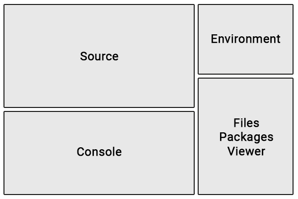

Overview
R is a free, open source coding language. It is frequently used for data analysis, although it can also be used to build websites with R Shiny.
RStudio
RStudio is a free integrated development environment (IDE), which provides a user-friendly interface to create and maintain R projects. To run RStudio, you must also download R.
Layout
The default RStudio layout includes four windows, each with multiple tabs. The most important tabs and their locations are shown below:

Here is a brief overview of what each tab does:
- Source: View, edit, and run R scripts
- Console: Type R commands. Also displays messages, warnings, and errors when code is run.
- Environment: View stored variables.
- Files: View folders and files. Add, open, rename, or delete files here.
- Packages: Install or update R packages.
- Viewer: View rendered files.
You can customize R Studio’s appearance and behavior under Tools > Global Options.
Folder Structure
Every RStudio project must be placed in its own folder, and WQdashboard is no exception. When you download WQdashboard from github, you will receive a zipped folder. After you unzip the folder, do not rename or move any of the files or folders unless you are experienced with R. The following files and folders are especially important:
- data
- data-raw
- DESCRIPTION
- inst
- R
- tests
- wqdashboard.Rproj
To open WQdashboard in RStudio, open wqdashboard.Rproj.
The WQdashboard folder will be shown in the “Files” tab. All of the
files you need to add data or run WQdashboard can be found in the
data-raw folder. The scripts in data-raw are
numbered in the order they should be run and include detailed
instructions at the top of each file. If it is your first time using
WQdashboard, run 00_install.R before doing anything
else.
To run a script, use CTRL + SHIFT +
ENTER on a Windows computer or CMD +
SHIFT + ENTER on a Mac.
Packages
Due to its open source nature, R’s capabilities can be greatly
expanded by downloading packages containing custom
code. WQdashboard uses multiple packages, including R
Shiny, importwqd,
and wqformat.
WQdashboard can not run unless these packages are
installed. To download all of the required packages, run
data-raw/00_install.R.
Packages may be updated from time to time in order to fix bugs or add new features. If you are prompted to update packages, do so.
To manually install or update packages, select the “Packages” tab in the lower right window. The “Install” and “Update” buttons can be used to add or update packages.